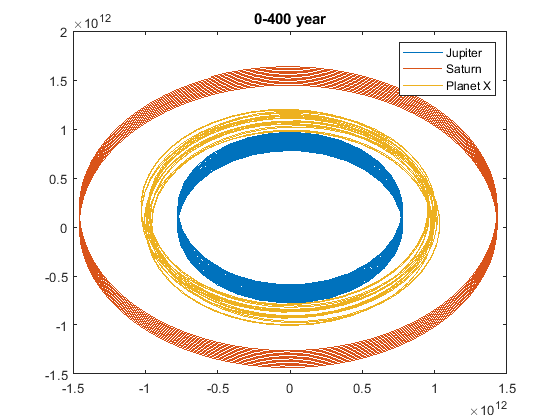
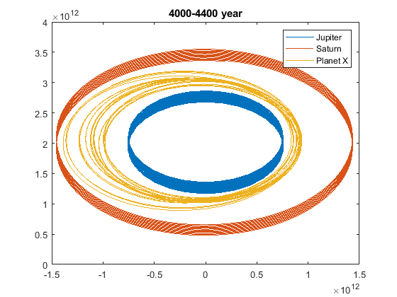
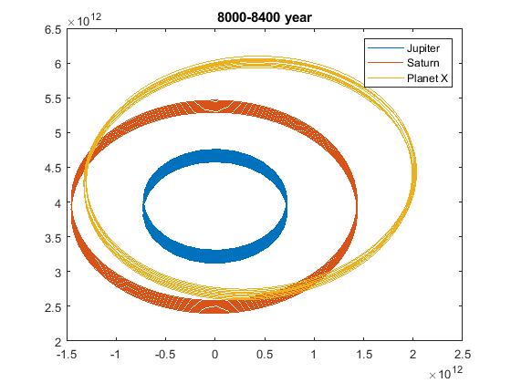
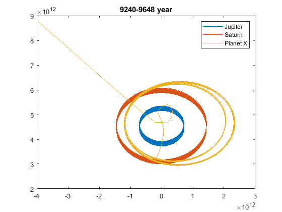

Probelm 2
Instability of planetary orbits between Jupiter and Saturn.
clear clc % Data G = 6.67408e-11; mass = [1.898e27, 5.6834e26, 1.98847e30, 1e24]; AU = 1.495978707e11; x = [5.2044*AU, 9.5826*AU, 0]; y = [0,0,0,0]; vx = [0,0,0,0]; vy = [13.07e3, 9.68e3, 0]; year = 365.2422222*24*3600; tvec = (0:0.4:10000)*year; %suppose the new planet is in L1 of the Jupiter and Saturn x4 = x(1)+(x(2)-x(1))*(mass(2)/(3*mass(1)))^(1/3)-10e10; xl1 = [x,x4]; v4 = sqrt(G*mass(3)/x4); vyl1 = [vy,v4]; %trajectories are too long too be diplayed in a signle plot... figure(1); [xt,yt,~,~] = compute_orbits_RK4_nbody(xl1, y, vx, vyl1, mass, tvec); plot(xt(1:1000,[1,2,4]),yt(1:1000,[1,2,4])); legend('Jupiter','Saturn','Planet X'); title('0-400 year'); figure(2) plot(xt(10001:11000,[1,2,4]),yt(10001:11000,[1,2,4])); legend('Jupiter','Saturn','Planet X'); title('4000-4400 year'); figure(3) plot(xt(20001:21000,[1,2,4]),yt(20001:21000,[1,2,4])); legend('Jupiter','Saturn','Planet X'); title('8000-8400 year'); figure(4) plot(xt(23100:24121,[1,2,4]),yt(23100:24121,[1,2,4])); legend('Jupiter','Saturn','Planet X'); title('9240-9648 year');   
At the very beginning (0-400 year), the orbit seems to be stable, but then the orbit starts to deviate (4000-4400 year). Then a new seemly stable orbital is formed (8000-8400 year), but it is already not between the Jupiter and Saturn. Later, by chance, the testing planet moves too close to Jupiter, and after a series of gravity assist, it escape the solar system.
Even if the gravitational forces between Jupiter and Saturn are ignored, they will still excert large pertubation on the orbit of this testing planet because of their relatively large mass. And we are expecting the testing planet still to be kicked out.
%discard, I was trying place the planet on other Lagrange point ar first. % %suppose the new planet is in L2 of the Jupiter and Sun % x4 = x(1)+x(1)*(mass(1)/(3*mass(3)))^(1/3); % xl2 = [x,x4]; % v4 = sqrt(G*mass(3)/x4); % vyl2 = [vy,v4]; % % figure(2); % [xt,yt,~,~] = compute_orbits_RK4_nbody(xl2, y, vx, vyl2, mass, tvec); % plot(xt(:,[1,2,4]),yt(:,[1,2,4])); % legend('Jupiter','Saturn','Planet X'); % % %suppose the new planet is in L3 of the Jupiter and Sun % x4 = x(1)+(x(1)*5*mass(1)/(12*mass(3))); % xl3 = [x,-x4]; % v4 = sqrt(G*mass(3)/x4); % vyl3 = [vy,-v4]; % % figure(3); % [xt,yt,~,~] = compute_orbits_RK4_nbody(xl3, y, vx, vyl3, mass, tvec); % plot(xt(:,[1,2,4]),yt(:,[1,2,4])); % legend('Jupiter','Saturn','Planet X');